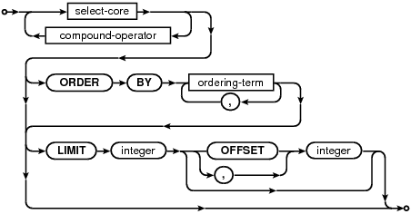
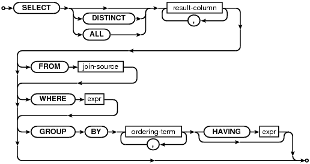
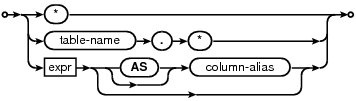
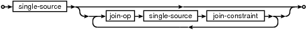
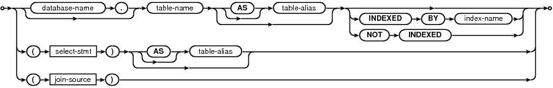
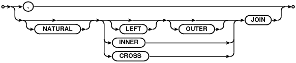
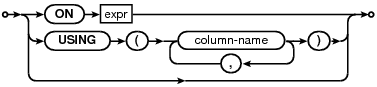
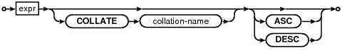
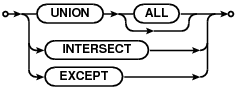

Choose any three.
|
|
SQL As Understood By SQLite
SELECT
select-stmt:

select-core:

result-column:

join-source:

single-source:

join-op:

join-constraint:

ordering-term:

compound-operator:

The SELECT statement is used to query the database. The result of a SELECT is zero or more rows of data where each row has a fixed number of columns. The number of columns in the result is specified by the expression list in between the SELECT and FROM keywords. Any arbitrary expression can be used as a result. If a result expression is * then all columns of all tables are substituted for that one expression. If the expression is the name of a table followed by .* then the result is all columns in that one table.
The DISTINCT keyword causes a subset of result rows to be returned, in which each result row is different. NULL values are not treated as distinct from each other. The default behavior is that all result rows be returned, which can be made explicit with the keyword ALL.
The query is executed against one or more tables specified after the FROM keyword. If multiple tables names are separated by commas, then the query is against the cross join of the various tables. The full SQL-92 join syntax can also be used to specify joins. A sub-query in parentheses may be substituted for any table name in the FROM clause. The entire FROM clause may be omitted, in which case the result is a single row consisting of the values of the expression list.
The WHERE clause can be used to limit the number of rows over which the query operates.
The GROUP BY clause causes one or more rows of the result to be combined into a single row of output. This is especially useful when the result contains aggregate functions. The expressions in the GROUP BY clause do not have to be expressions that appear in the result. The HAVING clause is similar to WHERE except that HAVING applies after grouping has occurred. The HAVING expression may refer to values, even aggregate functions, that are not in the result.
The ORDER BY clause causes the output rows to be sorted. The argument to ORDER BY is a list of expressions that are used as the key for the sort. The expressions do not have to be part of the result for a simple SELECT, but in a compound SELECT each sort expression must exactly match one of the result columns. Each sort expression may be optionally followed by a COLLATE keyword and the name of a collating function used for ordering text and/or keywords ASC or DESC to specify the sort order.
Each term of an ORDER BY expression is processed as follows:
If the ORDER BY expression is a constant integer K then the output is ordered by the K-th column of the result set.
If the ORDER BY expression is an identifier and one of the output columns has an alias by the same name, then the output is ordered by the identified column.
Otherwise, the ORDER BY expression is evaluated and the output is ordered by the value of that expression.
In a compound SELECT statement, the third ORDER BY matching rule requires that the expression be identical to one of the columns in the result set. The three rules are first applied to the left-most SELECT in the compound. If a match is found, the search stops. Otherwise, the next SELECT to the right is tried. This continues until a match is found. Each term of the ORDER BY clause is processed separately and may come from different SELECT statements in the compound.
The LIMIT clause places an upper bound on the number of rows returned in the result. A negative LIMIT indicates no upper bound. The optional OFFSET following LIMIT specifies how many rows to skip at the beginning of the result set. In a compound query, the LIMIT clause may only appear on the final SELECT statement. The limit is applied to the entire query not to the individual SELECT statement to which it is attached. Note that if the OFFSET keyword is used in the LIMIT clause, then the limit is the first number and the offset is the second number. If a comma is used instead of the OFFSET keyword, then the offset is the first number and the limit is the second number. This seeming contradition is intentional - it maximizes compatibility with legacy SQL database systems.
A compound SELECT is formed from two or more simple SELECTs connected by one of the operators UNION, UNION ALL, INTERSECT, or EXCEPT. In a compound SELECT, all the constituent SELECTs must specify the same number of result columns. There may be only a single ORDER BY clause at the end of the compound SELECT. The UNION and UNION ALL operators combine the results of the SELECTs to the right and left into a single big table. The difference is that in UNION all result rows are distinct where in UNION ALL there may be duplicates. The INTERSECT operator takes the intersection of the results of the left and right SELECTs. EXCEPT takes the result of left SELECT after removing the results of the right SELECT. When three or more SELECTs are connected into a compound, they group from left to right.